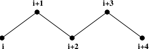
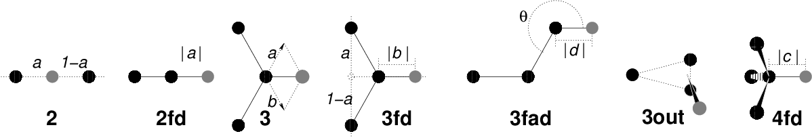
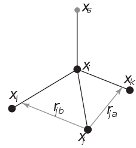

Methods¶
Exclusions and 1-4 Interactions.¶
Atoms within a molecule that are close by in the chain, i.e. atoms that are covalently bonded, or linked by one or two atoms are called first neighbors, second neighbors and third neighbors, respectively (see Fig. 34). Since the interactions of atom i with atoms i+1 and i+2 are mainly quantum mechanical, they can not be modeled by a Lennard-Jones potential. Instead it is assumed that these interactions are adequately modeled by a harmonic bond term or constraint (i, i+1) and a harmonic angle term (i, i+2). The first and second neighbors (atoms i+1 and i+2) are therefore excluded from the Lennard-Jones interaction list of atom i; atoms i+1 and i+2 are called exclusions of atom i.


Fig. 34 Atoms along an alkane chain.¶
For third neighbors, the normal Lennard-Jones repulsion is sometimes still too strong, which means that when applied to a molecule, the molecule would deform or break due to the internal strain. This is especially the case for carbon-carbon interactions in a cis-conformation (e.g. cis-butane). Therefore, for some of these interactions, the Lennard-Jones repulsion has been reduced in the GROMOS force field, which is implemented by keeping a separate list of 1-4 and normal Lennard-Jones parameters. In other force fields, such as OPLS 103, the standard Lennard-Jones parameters are reduced by a factor of two, but in that case also the dispersion (r\(^{-6}\)) and the Coulomb interaction are scaled. GROMACS can use either of these methods.
Treatment of Cut-offs¶
GROMACS is quite flexible in treating cut-offs, which implies there can be quite a number of parameters to set. These parameters are set in the input file for grompp. There are two sort of parameters that affect the cut-off interactions; you can select which type of interaction to use in each case, and which cut-offs should be used in the neighbor searching.
For both Coulomb and van der Waals interactions there are interaction type selectors (termed vdwtype and coulombtype) and two parameters, for a total of six non-bonded interaction parameters. See the User Guide for a complete description of these parameters.
Table 9 lists the parameters for the available functional forms and cut-off modifications. See Pair lists generation for more details about pair-list generation regarding cut-offs.
Type |
Parameters |
|
|---|---|---|
Coulomb |
Plain cut-off |
\(r_c\), \({\varepsilon}_{r}\) |
Reaction field |
\(r_c\), \({\varepsilon}_{rf}\) |
|
Shift function |
\(r_1\), \(r_c\), \({\varepsilon}_{r}\) |
|
Switch function |
\(r_1\), \(r_c\), \({\varepsilon}_{r}\) |
|
VdW |
Plain cut-off |
\(r_c\) |
Shift function |
\(r_1\), \(r_c\) |
|
Switch function |
\(r_1\), \(r_c\) |
|
Virtual interaction sites¶
Virtual interaction sites (called dummy atoms in GROMACS versions before 3.3) can be used in GROMACS in a number of ways. We write the position of the virtual site \(\mathbf{r}_s\) as a function of the positions of other particles \(\mathbf{r}_i\): \(\mathbf{r}_s = f(\mathbf{r}_1..\mathbf{r}_n)\). The virtual site, which may carry charge or be involved in other interactions, can now be used in the force calculation. The force acting on the virtual site must be redistributed over the particles with mass in a consistent way. A good way to do this can be found in ref. 104. We can write the potential energy as:
The force on the particle \(i\) is then:
The first term is the normal force. The second term is the force on particle \(i\) due to the virtual site, which can be written in tensor notation:
where \(\mathbf{F}_{s}\) is the force on the virtual site and \(x_s\), \(y_s\) and \(z_s\) are the coordinates of the virtual site. In this way, the total force and the total torque are conserved 104.
The computation of the virial ((28)) is non-trivial when virtual sites are used. Since the virial involves a summation over all the atoms (rather than virtual sites), the forces must be redistributed from the virtual sites to the atoms (using (278)) before computation of the virial. In some special cases where the forces on the atoms can be written as a linear combination of the forces on the virtual sites (types 2 and 3 below) there is no difference between computing the virial before and after the redistribution of forces. However, in the general case redistribution should be done first.


Fig. 35 The seven different types of virtual site construction. The constructing atoms are shown as black circles, the virtual sites in gray.¶
There are six ways to construct virtual sites from surrounding atoms in GROMACS, which we classify by the number of constructing atoms. Note that all site types mentioned can be constructed from types 3fd (normalized, in-plane) and 3out (non-normalized, out of plane). However, the amount of computation involved increases sharply along this list, so we strongly recommended using the first adequate virtual site type that will be sufficient for a certain purpose. Fig. 35 depicts 6 of the available virtual site constructions. The conceptually simplest construction types are linear combinations:
The force is then redistributed using the same weights:
The types of virtual sites supported in GROMACS are given in the list below. Constructing atoms in virtual sites can be virtual sites themselves, but only if they are higher in the list, i.e. virtual sites can be constructed from “particles” that are simpler virtual sites. The virtual site velocities are reported, but not used in the integration of the virtual site positions.
On top of an atom¶
This allows giving an atom multiple atom types and with that also assigned multiple, different bonded interactions. This can especially be of use in free-energy calculations.
The coordinates of the virtual site equal that of the constructing atom:
(281)¶\[\mathbf{r}_s ~=~ \mathbf{r}_i\]The force is moved to the constructing atom:
(282)¶\[\mathbf{F}_i ~=~ \mathbf{F}_{s}\]The velocity of the virtual site equals that of the constructing atom:
(283)¶\[\mathbf{v}_s ~=~ \mathbf{v}_i\]
As a linear combination of two atoms (Fig. 35 2)¶
The weights are calculated as
(284)¶\[w_i = 1 - a ~,~~ w_j = a\]In this case the virtual site is on the line through atoms \(i\) and \(j\).
The velocity of the virtual site is a linear combination of the velocities of the constructing atoms
On the line through two atoms, with a fixed distance (Fig. 35 2fd)¶
The position is calculated as:
(285)¶\[\mathbf{r}_s ~=~ \mathbf{r}_i + a \frac{ \mathbf{r}_{ij} } { | \mathbf{r}_{ij} | }\]In this case the virtual site is on the line through the other two particles at a distance of \(|a|\) from \(i\). The force on particles \(i\) and \(j\) due to the force on the virtual site can be computed as:
(286)¶\[\begin{split}\begin{array}{lcr} \mathbf{F}_i &=& \displaystyle \mathbf{F}_{s} - \gamma ( \mathbf{F}_{is} - \mathbf{p} ) \\[1ex] \mathbf{F}_j &=& \displaystyle \gamma (\mathbf{F}_{s} - \mathbf{p}) \\[1ex] \end{array} ~\mbox{ where }~ \begin{array}{c} \displaystyle \gamma = \frac{a}{ | \mathbf{r}_{ij} | } \\[2ex] \displaystyle \mathbf{p} = \frac{ \mathbf{r}_{is} \cdot \mathbf{F}_{s} } { \mathbf{r}_{is} \cdot \mathbf{r}_{is} } \mathbf{r}_{is} \end{array}\end{split}\]The velocity is calculated as:
(287)¶\[\mathbf{v}_{s} = \mathbf{v}_{i} + \frac{a}{|\mathbf{r}_{ij}|} \left(\mathbf{v}_{ij} - \mathbf{r}_{ij} \frac{\mathbf{v}_{ij}\cdot\mathbf{r}_{ij}} {|\mathbf{r}_{ij}|^2}\right)\]
As a linear combination of three atoms (Fig. 35 3)¶
The weights are calculated as:
(288)¶\[w_i = 1 - a - b ~,~~ w_j = a ~,~~ w_k = b\]In this case the virtual site is in the plane of the other three particles.
In the plane of three atoms, with a fixed distance (Fig. 35 3fd)¶
The position is calculated as:
(289)¶\[\mathbf{r}_s ~=~ \mathbf{r}_i + b \frac{ \mathbf{r}_{ijk} } { | \mathbf{r}_{ijk} | } ~\mbox{ where }~ \mathbf{r}_{ijk} ~=~ \mathbf{r}_{ij} + a \mathbf{r}_{jk}\]In this case the virtual site is in the plane of the other three particles at a distance of \(|b|\) from \(i\). The force on particles \(i\), \(j\) and \(k\) due to the force on the virtual site can be computed as:
(290)¶\[\begin{split}\begin{array}{lcr} \mathbf{F}_i &=& \displaystyle \mathbf{F}_{s} - \gamma ( \mathbf{F}_{is} - \mathbf{p} ) \\[1ex] \mathbf{F}_j &=& \displaystyle (1-a)\gamma (\mathbf{F}_{s} - \mathbf{p}) \\[1ex] \mathbf{F}_k &=& \displaystyle a \gamma (\mathbf{F}_{s} - \mathbf{p}) \\ \end{array} ~\mbox{ where }~ \begin{array}{c} \displaystyle \gamma = \frac{b}{ | \mathbf{r}_{ij} + a \mathbf{r}_{jk} | } \\[2ex] \displaystyle \mathbf{p} = \frac{ \mathbf{r}_{is} \cdot \mathbf{F}_{s} } { \mathbf{r}_{is} \cdot \mathbf{r}_{is} } \mathbf{r}_{is} \end{array}\end{split}\]The velocity is calculated as:
(291)¶\[\mathbf{v}_{s} ~=~ \mathbf{v}_{i} + \frac{b}{|\mathbf{r}_{ijk}|} \left(\dot{\mathbf{r}}_{ijk} - \mathbf{r}_{ijk}\frac{\dot{\mathbf{r}}_{ijk}\cdot\mathbf{r}_{ijk}} {|\mathbf{r}_{ijk}|^2}\right)\]
In the plane of three atoms, with a fixed angle and distance (Fig. 35 3fad)¶
The position is calculated as:
(292)¶\[\mathbf{r}_s ~=~ \mathbf{r}_i + d \cos \theta \frac{\mathbf{r}_{ij}}{ | \mathbf{r}_{ij} | } + d \sin \theta \frac{\mathbf{r}_\perp}{ | \mathbf{r}_\perp | } ~\mbox{ where }~ \mathbf{r}_\perp ~=~ \mathbf{r}_{jk} - \frac{ \mathbf{r}_{ij} \cdot \mathbf{r}_{jk} } { \mathbf{r}_{ij} \cdot \mathbf{r}_{ij} } \mathbf{r}_{ij}\]In this case the virtual site is in the plane of the other three particles at a distance of \(|d|\) from \(i\) at an angle of \(\alpha\) with \(\mathbf{r}_{ij}\). Atom \(k\) defines the plane and the direction of the angle. Note that in this case \(b\) and \(\alpha\) must be specified, instead of \(a\) and \(b\) (see also sec. Virtual sites). The force on particles \(i\), \(j\) and \(k\) due to the force on the virtual site can be computed as (with \(\mathbf{r}_\perp\) as defined in (292)):
(293)¶\[\begin{split}\begin{array}{c} \begin{array}{lclllll} \mathbf{F}_i &=& \mathbf{F}_{s} &-& \dfrac{d \cos \theta}{ | \mathbf{r}_{ij} | } \mathbf{F}_1 &+& \dfrac{d \sin \theta}{ | \mathbf{r}_\perp | } \left( \dfrac{ \mathbf{r}_{ij} \cdot \mathbf{r}_{jk} } { \mathbf{r}_{ij} \cdot \mathbf{r}_{ij} } \mathbf{F}_2 + \mathbf{F}_3 \right) \\[3ex] \mathbf{F}_j &=& && \dfrac{d \cos \theta}{ | \mathbf{r}_{ij} | } \mathbf{F}_1 &-& \dfrac{d \sin \theta}{ | \mathbf{r}_\perp | } \left( \mathbf{F}_2 + \dfrac{ \mathbf{r}_{ij} \cdot \mathbf{r}_{jk} } { \mathbf{r}_{ij} \cdot \mathbf{r}_{ij} } \mathbf{F}_2 + \mathbf{F}_3 \right) \\[3ex] \mathbf{F}_k &=& && && \dfrac{d \sin \theta}{ | \mathbf{r}_\perp | } \mathbf{F}_2 \\[3ex] \end{array} \\[5ex] ~\mbox{where }~ \mathbf{F}_1 = \mathbf{F}_{s} - \dfrac{ \mathbf{r}_{ij} \cdot \mathbf{F}_{s} } { \mathbf{r}_{ij} \cdot \mathbf{r}_{ij} } \mathbf{r}_{ij} ~\mbox{, }~ \mathbf{F}_2 = \mathbf{F}_1 - \dfrac{ \mathbf{r}_\perp \cdot \mathbf{F}_{s} } { \mathbf{r}_\perp \cdot \mathbf{r}_\perp } \mathbf{r}_\perp ~\mbox{and }~ \mathbf{F}_3 = \dfrac{ \mathbf{r}_{ij} \cdot \mathbf{F}_{s} } { \mathbf{r}_{ij} \cdot \mathbf{r}_{ij} } \mathbf{r}_\perp \end{array}\end{split}\]The velocity is calculated as:
(294)¶\[\begin{split}\mathbf{v}_{s} &= \mathbf{v}_{i} + d\cos\theta\ \frac{\delta}{\delta t}\frac{\mathbf{r}_{ij}}{|\mathbf{r}_{ij}|} + d\sin\theta\ \frac{\delta}{\delta t}\frac{\mathbf{r}_{\perp}}{|\mathbf{r}_{\perp}|} \\ ~\mbox{where}~&\\ \frac{\delta}{\delta t}\frac{\mathbf{r}_{ij}}{|\mathbf{r}_{ij}|} &= \frac{1}{|\mathbf{r}_{ij}|}\left(\mathbf{v}_{ij} - \mathbf{r}_{ij} \frac{\mathbf{v}_{ij}\cdot\mathbf{r}_{ij}}{|\mathbf{r}_{ij}|^2}\right)\\ \frac{\delta}{\delta t}\frac{\mathbf{r}_{\perp}}{|\mathbf{r}_{\perp}|} &= \frac{1}{|\mathbf{r}_{\perp}|} \left(\dot{\mathbf{r}}_{\perp} - \mathbf{r}_{\perp}\frac{\dot{\mathbf{r}}_{\perp}\cdot\mathbf{r}_{\perp}}{|\mathbf{r}_{\perp}|^2}\right)\\ \dot{\mathbf{r}}_\perp &= \mathbf{v}_{jk} - \mathbf{r}_{ij} \frac{|\mathbf{r}_{ij}|^2(\mathbf{v}_{ij}\cdot\mathbf{r}_{jk} + \mathbf{r}_{ij}\cdot\mathbf{v}_{jk}) - (\mathbf{r}_{ij}\cdot\mathbf{r}_{jk})(2\mathbf{r}_{ij}\cdot\mathbf{v}_{ij})} {|\mathbf{r}_{ij}|^4} - \frac{\mathbf{r}_{ij}\cdot\mathbf{r}_{jk}}{|\mathbf{r}_{ij}|^2}\ \mathbf{v}_{ij}\end{split}\]
As a non-linear combination of three atoms, out of plane (Fig. 35 3out)¶
The position is calculated as:
(295)¶\[\mathbf{r}_s ~=~ \mathbf{r}_i + a \mathbf{r}_{ij} + b \mathbf{r}_{ik} + c (\mathbf{r}_{ij} \times \mathbf{r}_{ik})\]This enables the construction of virtual sites out of the plane of the other atoms. The force on particles \(i,j\) and \(k\) due to the force on the virtual site can be computed as:
(296)¶\[\begin{split}\begin{array}{lcl} \mathbf{F}_j &=& \left[\begin{array}{ccc} a & -c\,z_{ik} & c\,y_{ik} \\[0.5ex] c\,z_{ik} & a & -c\,x_{ik} \\[0.5ex] -c\,y_{ik} & c\,x_{ik} & a \end{array}\right]\mathbf{F}_{s} \\ \mathbf{F}_k &=& \left[\begin{array}{ccc} b & c\,z_{ij} & -c\,y_{ij} \\[0.5ex] -c\,z_{ij} & b & c\,x_{ij} \\[0.5ex] c\,y_{ij} & -c\,x_{ij} & b \end{array}\right]\mathbf{F}_{s} \\ \mathbf{F}_i &=& \mathbf{F}_{s} - \mathbf{F}_j - \mathbf{F}_k \end{array}\end{split}\]The velocity is calculated as:
(297)¶\[\mathbf{v}_{s} ~=~ \mathbf{v}_{i} + \frac{c}{|\mathbf{r}_{m}|}\left(\dot{\mathbf{r}}_{m} - \mathbf{r}_{m} \frac{\dot{\mathbf{r}}_{m}\cdot\mathbf{r}_{m}}{|\mathbf{r}_{m}|^2}\right)\]
From four atoms, with a fixed distance, see separate Fig. 36¶
This construction is a bit complex, in particular since the previous type (4fd) could be unstable which forced us to introduce a more elaborate construction:


Fig. 36 The new 4fdn virtual site construction, which is stable even when all constructing atoms are in the same plane.¶
The position is calculated as
(298)¶\[\begin{split}\begin{aligned} \mathbf{r}_{ja} &=& a\, \mathbf{r}_{ik} - \mathbf{r}_{ij} = a\, (\mathbf{x}_k - \mathbf{x}_i) - (\mathbf{x}_j - \mathbf{x}_i) \nonumber \\ \mathbf{r}_{jb} &=& b\, \mathbf{r}_{il} - \mathbf{r}_{ij} = b\, (\mathbf{x}_l - \mathbf{x}_i) - (\mathbf{x}_j - \mathbf{x}_i) \nonumber \\ \mathbf{r}_m &=& \mathbf{r}_{ja} \times \mathbf{r}_{jb} \nonumber \\ \mathbf{r}_s &=& \mathbf{r}_i + c \frac{\mathbf{r}_m}{ | \mathbf{r}_m | } \end{aligned}\end{split}\]The velocity is calculated as:
(299)¶\[\begin{split}\mathbf{v}_{s} = \mathbf{v}_{i} + \frac{c}{|\mathbf{r}_{m}|}\left(\dot{\mathbf{r}}_{m} - \mathbf{r}_{m} \frac{\dot{\mathbf{r}}_{m}\cdot\mathbf{r}_{m}}{|\mathbf{r}_{m}|^2}\right)\\ ~\mbox{where}~&\\ \dot{\mathbf{r}}_{m} &= \dot{\mathbf{r}}_{ja} \times \mathbf{r}_{jb} + \mathbf{r}_{ja} \times \dot{\mathbf{r}}_{jb}\end{split}\]
In this case the virtual site is at a distance of \(|c|\) from \(i\), while \(a\) and \(b\) are parameters. Note that the vectors \(\mathbf{r}_{ik}\) and \(\mathbf{r}_{ij}\) are not normalized to save floating-point operations. The force on particles \(i\), \(j\), \(k\) and \(l\) due to the force on the virtual site are computed through chain rule derivatives of the construction expression. This is exact and conserves energy, but it does lead to relatively lengthy expressions that we do not include here (over 200 floating-point operations). The interested reader can look at the source code in
vsite.c. Fortunately, this vsite type is normally only used for chiral centers such as \(C_{\alpha}\) atoms in proteins.The new 4fdn construct is identified with a ‘type’ value of 2 in the topology. The earlier 4fd type is still supported internally (‘type’ value 1), but it should not be used for new simulations. All current GROMACS tools will automatically generate type 4fdn instead.
A linear combination of \(N\) atoms with relative weights \(a_i\)¶
The weight for atom \(i\) is:
(300)¶\[w_i = a_i \left(\sum_{j=1}^N a_j \right)^{-1}\]There are three options for setting the weights:
center of geometry: equal weights
center of mass: \(a_i\) is the mass of atom \(i\); when in free-energy simulations the mass of the atom is changed, only the mass of the A-state is used for the weight
center of weights: \(a_i\) is defined by the user